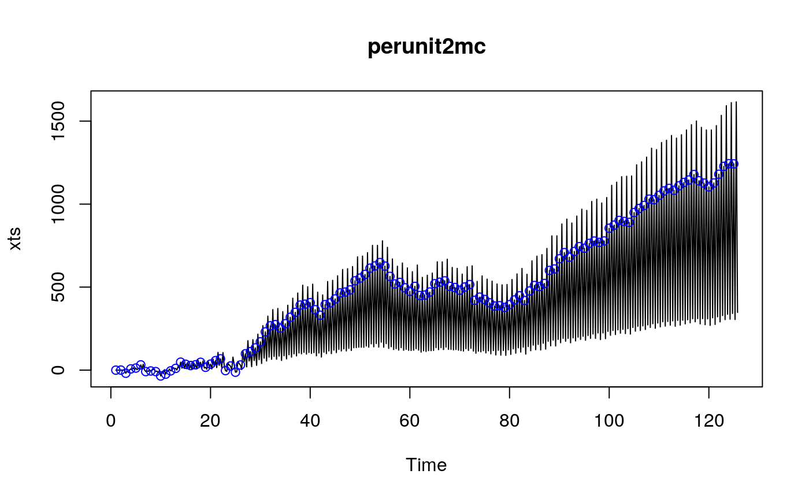
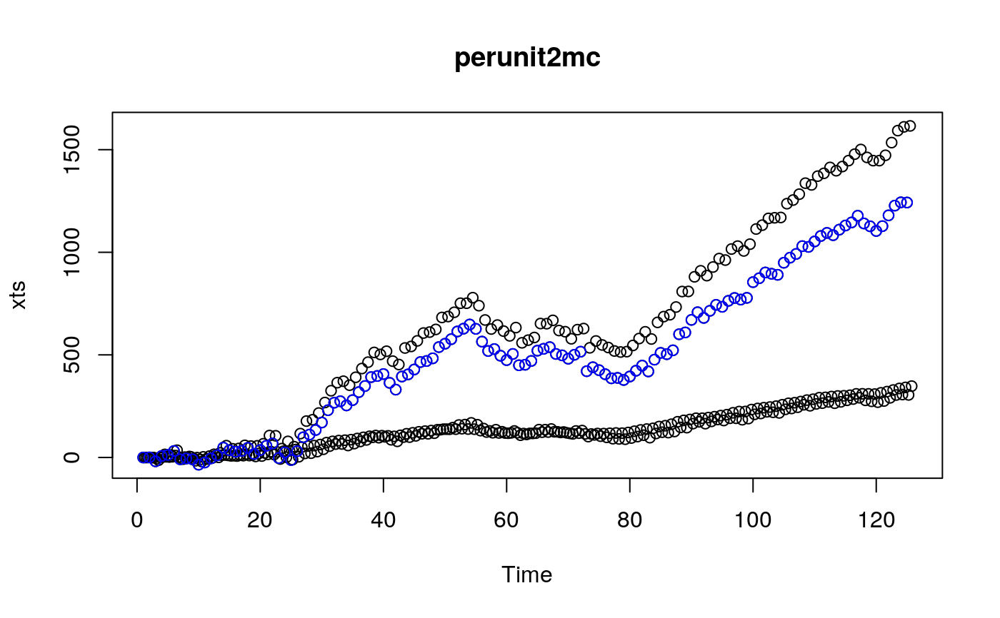

sim_pc.RdSimulate a realization of a periodically correlated arma model or a continuation of an existing series. Initial values may be given too.
sim_pc(model, n = NA, randgen = rnorm, seasonof1st = 1, nepochs = NA, n.start = NA, x, eps, nmean = NULL, nintercept = NULL, ...)
| model | a list with elements
|
|---|---|
| n | length of the series. |
| randgen | random number generator as required by
|
| seasonof1st | season of the first value. |
| nepochs |
number of epochs; if |
| n.start | burn-in number; generate \(\code{n.start + n}\) observations and
discard the first |
| x | initial or before values, see Details. |
| eps | innovations, see Details. |
| nmean | a vector of length |
| nintercept | a vector of length |
| ... | any additional arguments to be passed on to |
Argument x can be used to specify two types of initialisation
values - `before' and `init'. They are used similarly in computations
but `before' values are not included in the result, while `init'
values are (unless dropped due to n.start). `Before' values
provide a convenient way to simulate continuation trajectories for a
time series, for example for simulation based prediction intervals.
If x is "numeric", it represents `before'
values. Alternatively, x can be a list with components
"before" and "init".
Innovations are usually generated with the random number generator
specified by randgen (with default rnorm) and the
... parameters by a call to the function sim_pwn, see
the documentation for sim_pwn for various ways to control the
distribution of the generated sequence.
The innovations can also be generated in advance and supplied using
argument eps. If eps is numeric, it is taken to
represent the innovations. Alternatively, eps can be a list
with the innovations in component "main". This list may also
contain components "before" and/or "init" specifying
`before' or `initial' values, with interpretation as for x.
nintercept can be used to specify trend representing the effect
of time and/or covariates. As for eps, if it is numeric it is
taken to represent the main values. It can also be a list with
components before, init, and main.
To avoid ambiguity, let's reiterate that before values are past
values of the corresponding quantity (before the start of the
simulated series), while init values are "initial" values. In
particular, if initial values are specified for x, these will
form the start of the generated series (unless n.start leads to
them being discarded).
If before values are specified for the series and the innovations, then they play a role analogous to that of initial values, so it does not make much sense to supply also initial values.
The function effectively does the following.
innov is generated if not supplied,
a vector of innovations is created
eps <- c(innovbefore,innovinit,innov),
a vector x is created of the same length as eps,
and initialised with xbefore and xinit.
If there are no initial or before values, these are assumed to be 0.
The remaining values of x are filled using the pc-arma equations.
Finally, the xbefore values are discarded as well as the first
n.start values.
n.start should usually be a multiple of the period since
otherwise the first observation in the returned vector will not
correspond to seasonof1st.
sim_pc deals mainly with the interpretation of the parameters.
The actual computations are done by pc.filter. Moreover,
sim_pc does not look at the model. It knows only about
model$period and uses it to compute n if n is not
specified.
(It probably should not care even about this.)
numeric, the simulated time series
option to return the innovation sequence; option to include the before values.
option to return the season of the first value in the returned series
(it may be different from seasonof1st due to n.start).
m1 <- rbind( c(1, 0.81, 0), c(1, 0.4972376, 0.4972376) ) testphi <- slMatrix( init = m1 ) m2 <- rbind( c(1, 0, 0), c(1, 0, 0) ) testtheta <- slMatrix( init = m2 ) ## phi and theta are slMatrix here. mo1 <- list(phi = testphi, theta = testtheta, p = 2, q = 2, period = 2) set.seed(1234) a1 <- sim_pc(mo1, 100) ## phi and theta are ordinary matrices here. mo2 <- list(phi = m1[ , 2:ncol(m1)], theta = m2[ , 2:ncol(m2)], p = 2, q = 2, period = 2) set.seed(1234) a2 <- sim_pc(mo2, 100) identical(a1, a2)#> [1] TRUE## Lina's PAR model parcoef <- rbind(c(0.5, -0.06), c(0.6, -0.08), c(0.7, -0.1), c(0.2, 0.15) ) picoef1 <- c(0.8, 1.25, 2, 0.5) parcoef2 <- pi1ar2par(picoef1, parcoef) picoef2 <- c(4, 0.25, 5, 0.2) coefper2I2 <- pi1ar2par(picoef2, parcoef2) #### specify the model using multi-companion approach mc2I2 <- mcompanion::mc_from_filter(coefper2I2) co2I2 <- eigen(mc2I2)$vectors co2I2#> [,1] [,2] [,3] [,4] #> [1,] 0.1524986 -0.1524986 0.01157344 -0.0005488947 #> [2,] 0.7624929 -0.7624928 0.26297482 0.0405688010 #> [3,] 0.1524986 -0.1524986 0.09131096 0.0323513211 #> [4,] 0.6099942 -0.6099943 0.96040232 0.9986527240m2I2 <- mcompanion::sim_pcfilter(period = 4, n.root = 4, eigabs = c(1, 0.036568887, 0.001968887), eigsign = c(1, 1, -1), len.block = c(2, 1, 1), type.eigval = c("r", "r", "r"), co = cbind(co2I2[ ,1], rep(NA, 4), co2I2[,3:4])) m2I2$pcfilter#> [,1] [,2] [,3] [,4] #> [1,] 26.6776382 -11.62777150 38.51128378 -0.76251650 #> [2,] 0.3204255 -0.08629939 -0.05644545 0.08682460 #> [3,] 7.4995587 -1.47779772 3.48496388 -0.01466647 #> [4,] 0.4794181 -1.52298674 0.05001173 -0.07415064# todo: give example with sigmat^2 !!!